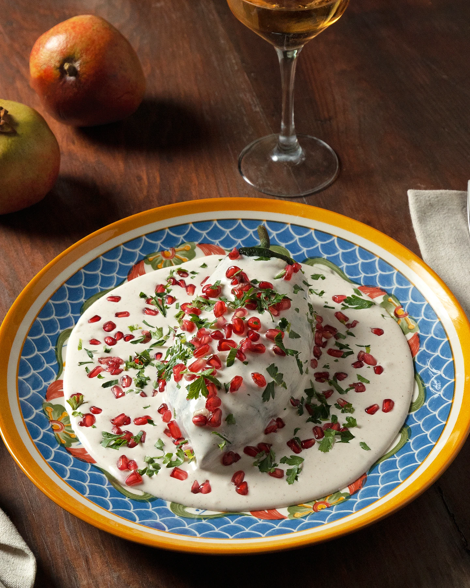
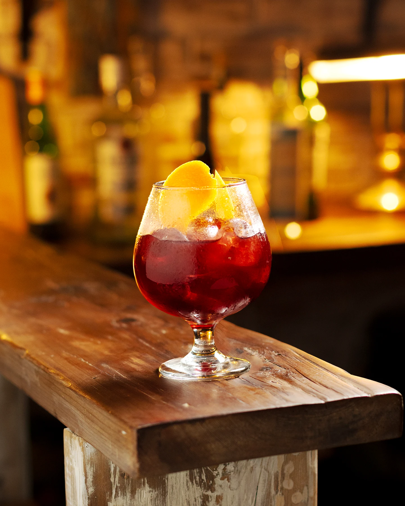
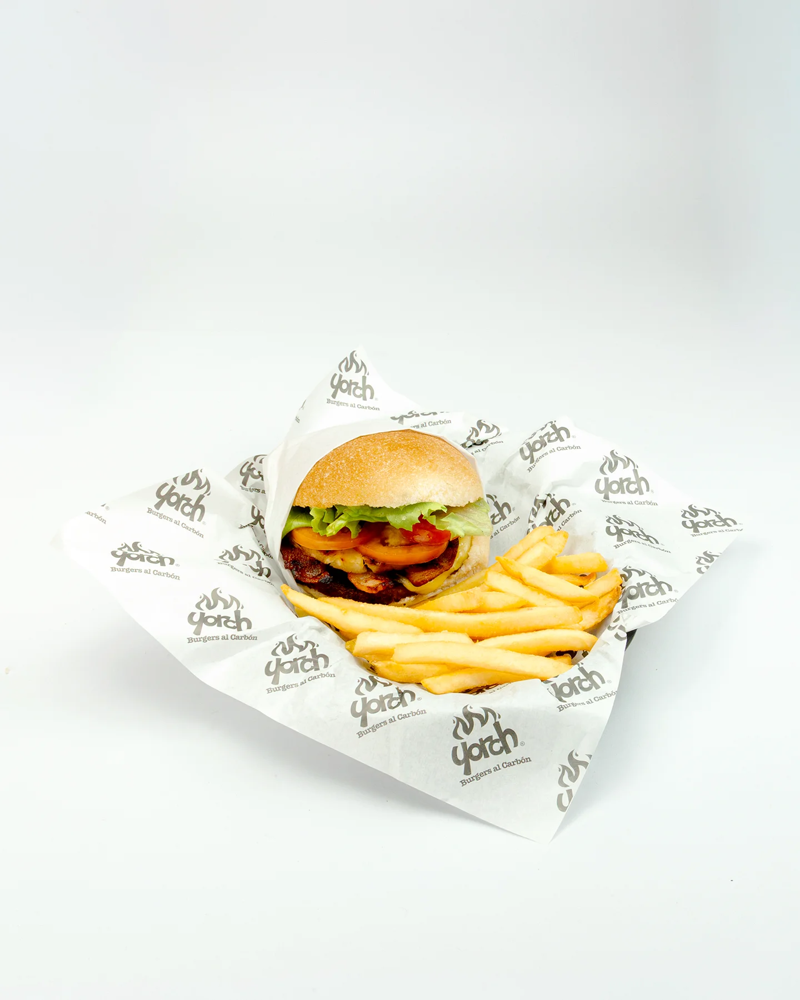
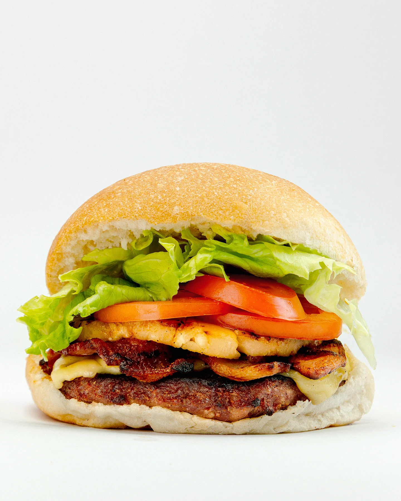
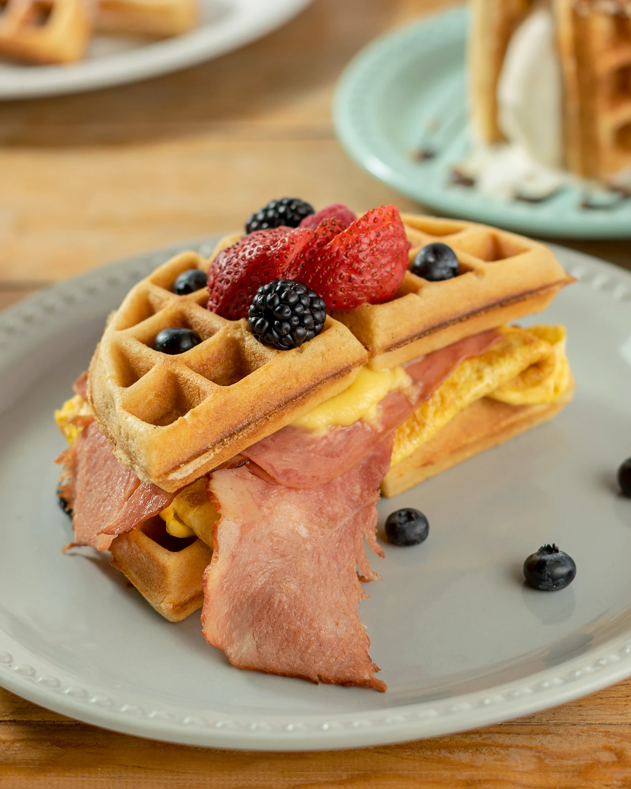
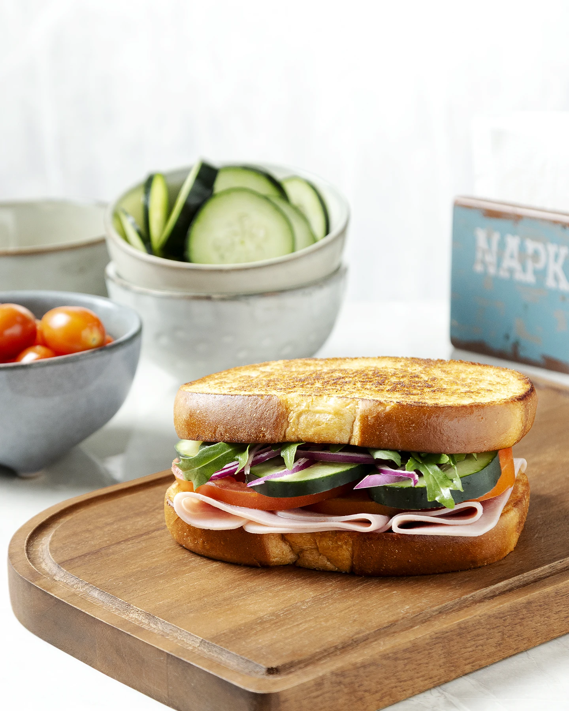
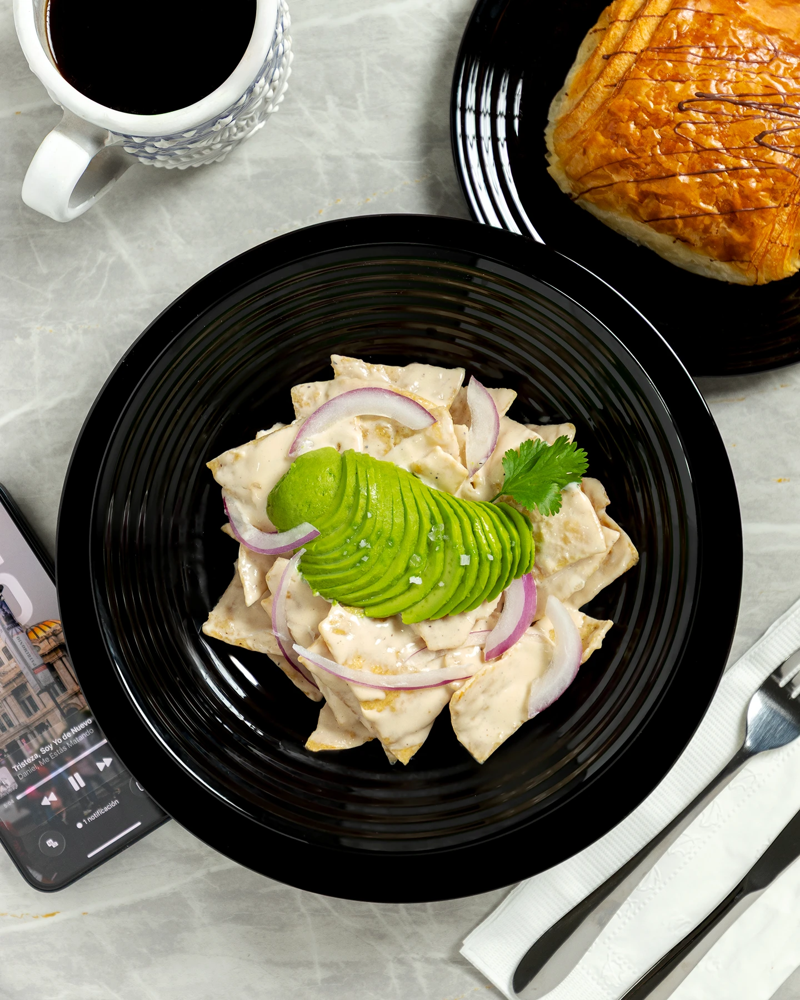
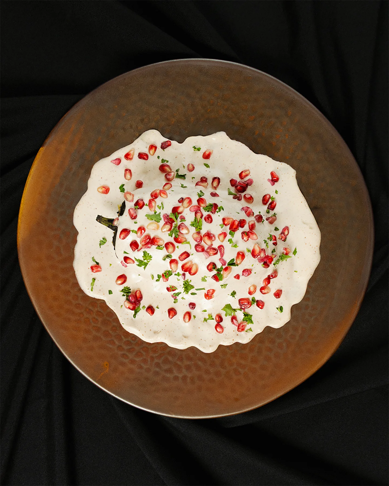
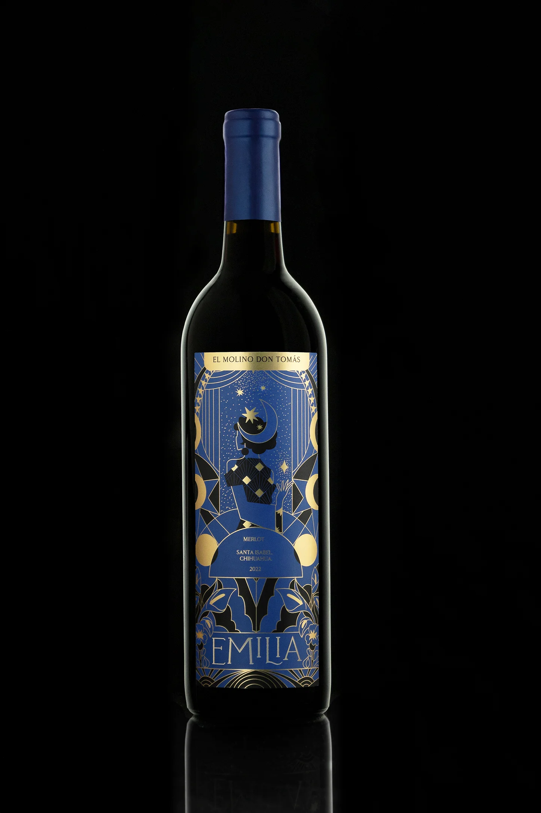
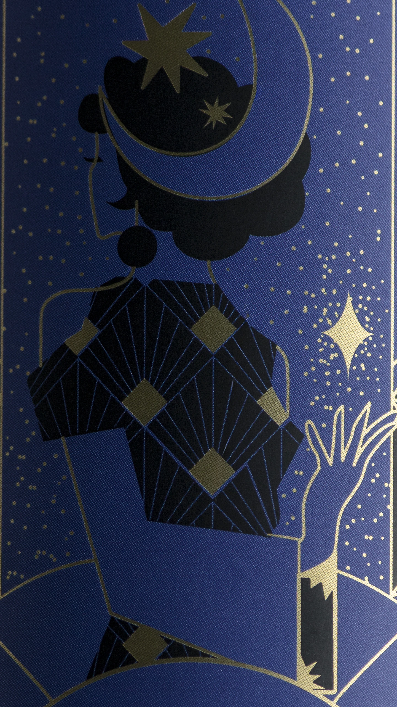

Fotografía para tu Restaurante
Realizo sesiones de fotografía gastronómica pensadas para restaurantes, cafeterías y bares. Esas fotografías le sirven para la presentación de su menú, para sus redes sociales y para campañas publicitarias.

Platillos de temporada

Bebidas y coctelería
Platillos insignia
Fotografía para tu Menú

Enseña tu producto

Fotografía de Detalle
Detalles de tu producto
Fotografías que destaquen los ingredientes, las texturas y los detalles de cada platillo, imágenes que puedan utilizar en su menú, sus redes sociales, plataformas digitales y materiales promocionales.
Mira mas de mis fotografias

Fotografía Profesional.

Destaca cualquiera de tus platillos.

Cuidado al detalle.

Fotografía de Producto / Contacto
Además de fotografía gastronómica, hago fotografía
de producto para marcas y
negocios.
Si tu restaurante comercializa bebidas, salsas,
productos envasados o artículos propios,
puedo tomarle fotografías para catálogos, tiendas
digitales, redes sociales y
publicidad.
Podemos agendar una sesión que integre tus platillos
y productos, o trabajar cada
sesión de manera independiente.

Demuestra la calidad de tus productos

Contactame
Cuéntame qué productos, platillos o campaña
quieres
fotografiar y
planeamos una sesión acorde a las
necesidades de tu
negocio.
Puedes contactarme por Instagram o WhatsApp
y
conversemos sobre
como puedo ayudarte a mejorar la imagen de
tu
negocio con
fotografías profesionales.
close